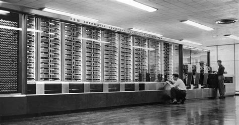
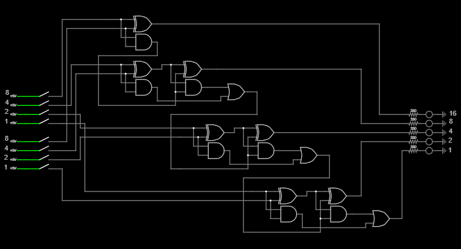

Relay Adder

Before transistors and microchips, computers weren’t small, silent, or instant. They were giant machines made of relays (mechanical switches controlled by an electromagnet), like the Harvard Mark I, using thousands of electromechanical switches to perform calculations. Each relay acted as a simple on/off switch, yet together they could solve complex problems — from ballistic tables to early scientific calculations. I find it fascinating that such simple switches could power an entire computer. Inspired by that ingenuity, I decided to build my own relay-based machine. It’s nowhere near as powerful — mine can only add — but building it gave me a real sense of how computing started.

My smaller binary 4-bit adder is also made of electromagnetic relays.
It can add just two numbers from 0 to 15 and uses push buttons as the input and it outputs the answer from 0 to 30 on 5 leds. And even though it can only do very simple calcualtions it still requires 21 relays after designing it to use as few as possible — it runs on 5v which I am supplying with a 4A/20W charger since the it needs about 2A. All the connections are made directly using the screw terminals on the relays or connected to the breadboard in the center — it's all screwed onto a piece of wood so it dosen't move around.

In this picture you can see a the schematics of my relay adder. The schematic uses logic gates to showcase how my adder works but each logic gate can be recreated with relays just like I did. Each group of logic gates is a full adder besides the one at the top which can add two numbers from 0 to 1 and also a third carry bit from 0 to 1. Then they are all connected together; the carry out of one stage goes to the carry in of the next stage. The group of logic gates at the top is just a half adder which can add two numbers from 0 to 1 and no third carry bit. I did this becuase I didn't need the adder to be able to add two 4 bit numbers and then just a 3rd one bit number, this let me save quite a few relays.